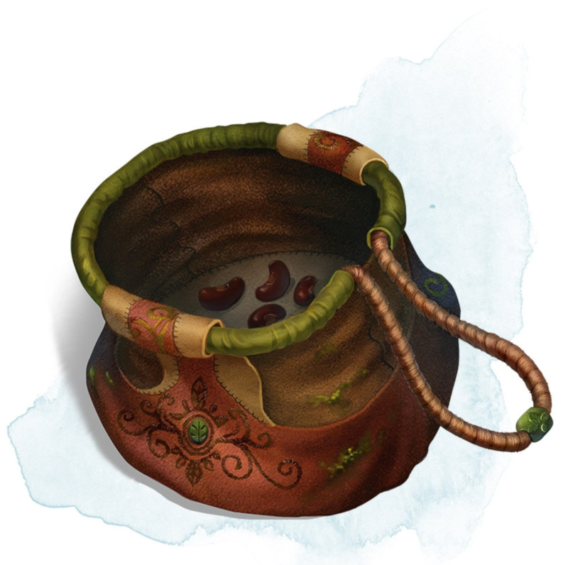

Sac de haricots
[ Bag of Beans ]
Objet merveilleux, rare
À l'intérieur de sac en tissu lourd se trouvent 3d4 haricots secs. Le sac pèse 250 grammes + 125 grammes pour chaque haricot qu'il contient.
Si vous videz le contenu du sac sur le sol, les haricots explosent. Chaque créature présente dans un rayon de 3 mètres autour du point d'impact entre les haricots et le sol doit effectuer un jet de sauvegarde de Dextérité DD 15, subissant 5d4 dégâts de feu en cas d'échec, ou la moitié de ces dégâts en cas de réussite. Le feu enflamme les objets inflammables qui se trouvent dans la zone et qui ne sont ni portés ni transportés.
Si vous prélevez un haricot du sac, et le plantez dans la terre ou le sable, puis l'arrosez, le haricot produit un effet une minute plus tard, à l'endroit où vous l'avez planté. Le MD peut choisir l'effet en consultant la table qui suit, le déterminer aléatoirement, ou créer un nouvel effet.
Si vous videz le contenu du sac sur le sol, les haricots explosent. Chaque créature présente dans un rayon de 3 mètres autour du point d'impact entre les haricots et le sol doit effectuer un jet de sauvegarde de Dextérité DD 15, subissant 5d4 dégâts de feu en cas d'échec, ou la moitié de ces dégâts en cas de réussite. Le feu enflamme les objets inflammables qui se trouvent dans la zone et qui ne sont ni portés ni transportés.
Si vous prélevez un haricot du sac, et le plantez dans la terre ou le sable, puis l'arrosez, le haricot produit un effet une minute plus tard, à l'endroit où vous l'avez planté. Le MD peut choisir l'effet en consultant la table qui suit, le déterminer aléatoirement, ou créer un nouvel effet.
| d100 | Effet |
|---|---|
| 01 | 5d4 champignons vénéneux poussent. Si une créature mange un champignon vénéneux, lancer n'importe quel dé. Sur un résultat impair, la créature doit réussir un jet de sauvegarde de Constitution DD 15 sous peine de subir 5d6 dégâts de poison et être empoisonnée pendant 1 heure. Sur un résultat pair, la créature gagne 5d6 points de vie temporaires pendant 1 heure. |
| 02-10 | Un geyser apparaît et fait jaillir de l'eau, de la bière, du jus de baies, du thé, du vinaigre, du vin, ou de l'huile (au choix du MD) jusqu'à 9 mètres dans les airs, pendant 1d12 tours. |
| 11-20 | Un sylvanien pousse. Il y a 50 % de risque que le sylvanien soit chaotique mauvais et vous attaque. |
| 21-30 | Une statue de pierre, immobile mais animée, vous ressemblant émerge du sol. Elle vous menace verbalement. Si vous la quittez et que d'autres créatures viennent près d'elle, elle vous décrit comme le plus malfaisant des criminels et envoie les nouveaux arrivants vous trouver et vous attaquer. Si vous vous trouvez sur le même plan d'existence que la statue, elle sait où vous êtes. La statue devient inanimée au bout de 24 heures. |
| 31-40 | Un feu de camp produisant des flammes bleues jaillit et brûle pendant 24 heures (ou jusqu'à ce qu'il soit éteint). |
| 41-50 | 1d6 + 6 criards poussent. |
| 51-60 | 1d4 + 8 crapauds rose brillant sortent de terre en rampant. Lorsqu'un crapaud est touché, il se transforme en un monstre de taille G ou P que le MD choisit. La monstre reste pendant 1 minute, puis disparaît dans un nuage de fumée rose brillant. |
| 61-70 | Une bulette affamée creuse jusqu'à la surface et vous attaque. |
| 71-80 | Un arbre fruitier pousse. Il possède 1d10 + 20 fruits, 1d8 d'entre eux fonctionnent comme des potions magiques déterminées aléatoirement, tandis qu'un autre fonctionne comme un poison à ingestion du choix du MD. L'arbre s'évapore au bout d'une heure. Les fruits cueillis restent, conservant leur magie pendant 30 jours. |
| 81-90 | Un nid contenant 1d4 + 3 œufs surgit du sol. Toute créature qui mange un œuf doit effectuer un jet de sauvegarde de Constitution DD 20. En cas de jet de sauvegarde réussi, une créature augmente de manière permanente sa valeur de caractéristique la plus faible de 1, choisie de manière aléatoire dans le cas ou plusieurs valeurs seraient égales. En cas d'échec au jet, la créature subit 10d6 dégâts de force à cause d'une explosion magique interne. |
| 91-99 | Une pyramide à base carré de 18 mètres de côté jaillit du sol. À l'intérieur se trouve un sarcophage abritant un seigneur momie. La pyramide est traitée comme le repaire du seigneur momie, et son sarcophage contient un trésor du choix du MD. |
| 00 | Une tige de haricot géant pousse jusqu'à atteindre une hauteur déterminée par le MD. Le sommet atteint ce que le MD choisit, comme un simple mais beau panorama, la forteresse d'un géant des nuages, ou un autre plan d'existence. |
Dungeon Master´s Guide (SRD)
